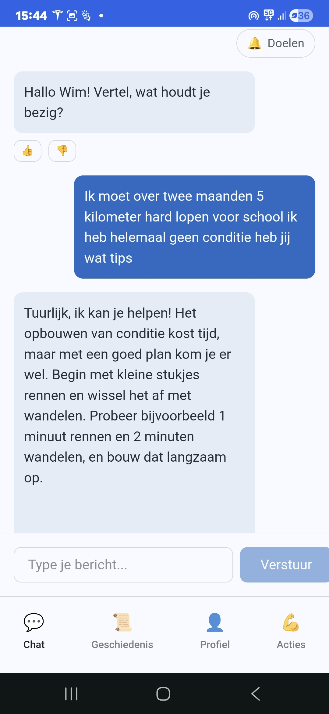
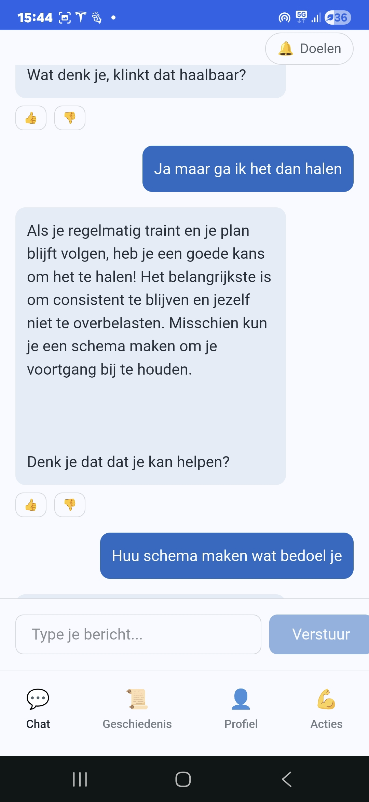
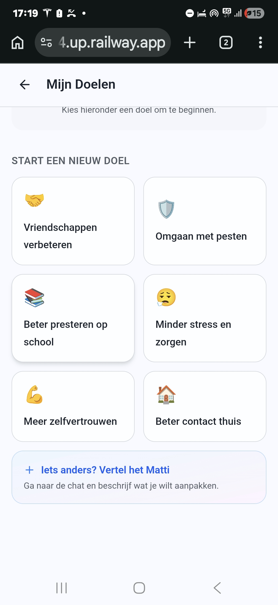
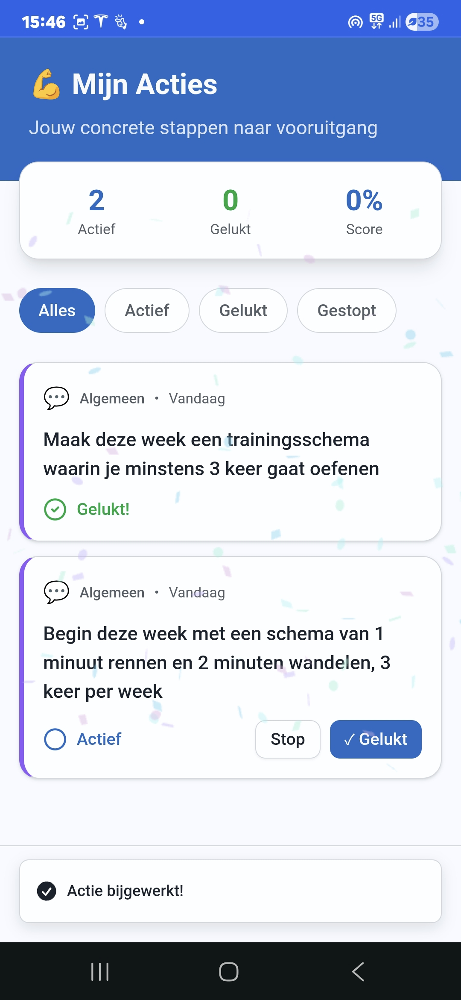

Voor middelbare scholen
Matti – Digitale aanvulling op de leerlingenzorg
Preventieve, doelgerichte ondersteuning voor leerlingen, aanvullend op de bestaande zorgstructuur van middelbare scholen.
Preventieve, doelgerichte ondersteuning voor leerlingen, aanvullend op de bestaande zorgstructuur van middelbare scholen.
Matti is specifiek ontwikkeld als ondersteuning binnen de zorgstructuur van middelbare scholen. Zorgcoördinatoren en docenten behouden de regie. Leerlingen krijgen laagdrempelige ondersteuning bij mentale druk, zelfregie en het formuleren van kleine, haalbare doelen.
De druk op de jeugdzorg neemt al jaren toe. Wachttijden lopen op en gespecialiseerde hulp is niet altijd direct beschikbaar. Tegelijkertijd signaleren veel middelbare scholen een toename van somberheid, stress en mentale druk onder leerlingen.
Veel van deze signalen ontstaan binnen de schoolcontext, vaak in een fase waarin problemen nog niet klinisch of ernstig zijn, maar wel aandacht vragen.
Juist in deze fase kan preventieve ondersteuning het verschil maken.
Door leerlingen eerder te helpen bij het herkennen van signalen, het formuleren van kleine doelen en het zetten van concrete stappen, kan escalatie worden voorkomen. Dit draagt bij aan het verminderen van persoonlijke problematiek én kan op termijn de instroom in zwaardere jeugdzorgtrajecten beperken.
Matti is ontwikkeld vanuit deze preventieve gedachte: ondersteuning bieden voordat problemen verergeren.
Van gesprek naar concrete actie — laagdrempelig, veilig en aanvullend op de zorgprofessional.
Matti herkent signalen van stress, somberheid of sociale druk in een gesprek. Leerlingen kunnen vrijuit praten zonder oordeel.
Samen met de leerling worden gevoelens en situaties geordend. Matti helpt bij het formuleren van kleine, haalbare doelen.
Doelen worden vertaald naar concrete acties. Leerlingen zien hun voortgang en ervaren eigenaarschap over hun ontwikkeling.
Matti helpt leerlingen niet alleen praten over wat hen bezighoudt, maar ondersteunt hen bij het formuleren van kleine, haalbare doelen. Deze doelen worden vertaald naar concrete acties. Leerlingen zien hun voortgang en ervaren eigenaarschap over hun ontwikkeling.




Bij de ontwikkeling van mijn eerdere AI-assistent Opvoedmaatje is in samenwerking met de Universiteit van Amsterdam onderzoek gedaan naar gebruiksvriendelijkheid en kwaliteit van antwoorden.
Daaruit bleek dat een gestructureerd, domeinspecifiek ontworpen AI-assistent zich duidelijk onderscheidt van een open generiek systeem zoals standaard ChatGPT. De manier van ontwerpen – met vaste kaders, duidelijke afbakening en zorgvuldig geformuleerde responsprincipes – maakt een wezenlijk verschil in veiligheid en toepasbaarheid.
Internationaal onderzoek, waaronder studies van de University of Copenhagen (173.000+ jongeren) en recente meta-analyses in JMIR, laat zien dat zorgvuldig ontworpen AI-systemen kunnen bijdragen aan vroegsignalering en vermindering van beginnende mentale klachten.
Matti is gebouwd vanuit dezelfde ontwerpprincipes.
Ik geloof dat veel problemen bij jongeren escaleren omdat signalen te laat worden gezien. Vanuit die overtuiging ben ik mij grondig gaan verdiepen in wetenschappelijk onderzoek naar digitale ondersteuning en vroegsignalering bij jongeren.
Tegelijkertijd ben ik mij zeer bewust van de risico's en kwetsbaarheden van AI in deze context. Daarom heb ik Matti niet ontwikkeld als een open generieke chatbot, maar als een preventieve, gestructureerde en zorgvuldig ingebedde ondersteuning binnen de bestaande zorgstructuur van scholen.
Mijn manier van werken is sterk beïnvloed door principes uit de Aikido: rust bewaren onder druk, verantwoordelijkheid nemen in complexe situaties en zorgvuldig handelen wanneer kwetsbaarheid in het spel is.
Technologie is voor mij geen doel op zich, maar een middel dat veilig en verantwoord moet worden ingezet — altijd aanvullend op professionals.
Wij kunnen scholen ondersteunen bij het verkennen en aanvragen van beschikbare gemeentelijke subsidiepotten op het gebied van preventie en mentale gezondheid.
Matti combineert empathische AI met slimme signalering en rapportage voor scholen.
Matti luistert zonder oordeel en stelt de juiste vragen. Getraind op jeugdpsychologie en communicatie met jongeren.
Wanneer een gesprek zorgwekkende signalen bevat, wordt dit veilig doorgegeven aan de verantwoordelijke professional.
Geanonimiseerde inzichten per school of leeftijdsgroep. Zie waar de druk het grootst is en stuur gericht bij.
Alle data is versleuteld. Gesprekken worden nooit gedeeld zonder toestemming. AVG-compliant.
Geen lange implementatietrajecten. Matti is binnen één week operationeel voor een school.
Leerlingen werken aan concrete, haalbare doelen. Voortgang is zichtbaar en motiveert tot actie.
Ontdek in enkele minuten hoe Matti kan bijdragen aan laagdrempelige ondersteuning van leerlingen binnen uw school. Na aanmelding neem ik persoonlijk contact met u op.
Bedankt! Ik neem persoonlijk contact met u op.
Geen verplichtingen. Binnen 2 werkdagen contact.